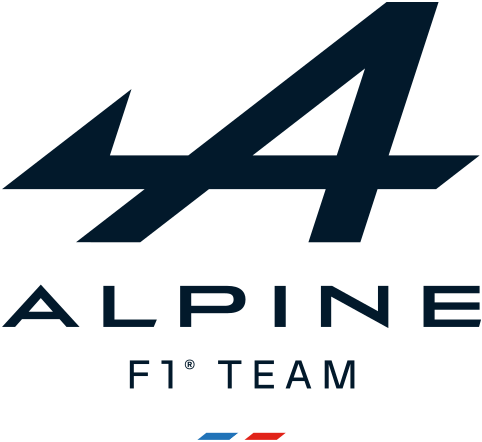

O que é a Fórmula 1?

A Fórmula 1 (F1) é a categoria máxima do automobilismo mundial, organizada pela FIA. As corridas, chamadas de Grandes Prémios, acontecem em diversos países ao longo do ano. É um desporto que combina tecnologia de ponta, estratégia e talento dos pilotos.
Equipas
A competição conta com equipas de renome, cada uma com uma história rica e conquistas memoráveis. Aqui estão algumas das equipas mais emblemáticas:
Fundada em 1963 por Bruce McLaren, a McLaren é uma das equipas mais icónicas da F1. Com 8 títulos de construtores e 12 de pilotos, revelou lendas como Ayrton Senna e Lewis Hamilton. Atualmente, busca retornar ao topo com Lando Norris e Oscar Piastri.
A Ferrari é a equipa mais antiga e bem-sucedida da F1, com 16 títulos de construtores e 15 de pilotos. Fundada em 1929, é conhecida pela sua paixão e pela cor vermelha. Pilotos como Michael Schumacher e Niki Lauda fizeram história com a Scuderia.

A Red Bull Racing entrou na F1 em 2005 e rapidamente se tornou uma potência, conquistando 6 títulos de construtores e 7 de pilotos. Com uma abordagem inovadora e jovens talentos como Max Verstappen, domina a era atual da F1.

A Mercedes regressou à F1 em 2010 e dominou a era híbrida, com 8 títulos consecutivos de construtores entre 2014 e 2021. Lewis Hamilton e Nico Rosberg foram pilares desta era de sucesso.

A Aston Martin retornou à F1 em 2021 após décadas de ausência. Com investimentos pesados e a experiência de Fernando Alonso, procura estabelecer-se entre os melhores.

Antiga Renault, a Alpine venceu dois campeonatos com Fernando Alonso em 2005 e 2006. Agora, sob a marca Alpine, aposta em jovens talentos como Pierre Gasly e Esteban Ocon.

A Haas é a única equipa americana na F1, estreando em 2016. Conhecida por sua parceria com a Ferrari, enfrenta desafios para competir com as equipas mais estabelecidas.
Antiga Toro Rosso, a Visa RB é a equipa satélite da Red Bull. Revelou talentos como Sebastian Vettel e Max Verstappen. Em 2025, aposta em Yuki Tsunoda e Isack Hadjar.
Fundada em 1977 por Frank Williams, a equipa conquistou 9 títulos de construtores e 7 de pilotos. Apesar de anos difíceis, mantém um lugar especial no coração dos fãs.

Antiga Alfa Romeo e Sauber, a Stake é uma equipa com uma longa história na F1. Em 2025, conta com Nico Hulkenberg e Gabriel Bortoleto para buscar resultados melhores.
Pilotos de 2025
Os pilotos da F1 são os protagonistas deste espetáculo. Conheça os principais nomes da temporada de 2025:

Max Verstappen - 27 anos, Red Bull Racing. Quatro vezes campeão mundial (2021, 2022, 2023,2024), é conhecido pela sua agressividade e talento excecional. Domina a F1 desde a era híbrida.

Liam Lawson - 23 anos, Red Bull Racing. Jovem promessa neozelandesa, subiu rapidamente nas categorias de base. Em 2025, tem a oportunidade de brilhar ao lado de Verstappen.

Lewis Hamilton - 40 anos, Ferrari. Sete vezes campeão mundial, é considerado um dos maiores pilotos de todos os tempos. Em 2025, busca o seu oitavo título com a Scuderia.

Charles Leclerc - 27 anos, Ferrari. Piloto monegasco com um talento bruto, busca o seu primeiro título mundial. Conhecido pela sua velocidade e consistência.

Lando Norris - 25 anos, McLaren. Britânico carismático e rápido, é uma das estrelas em ascensão da F1. Em 2025, continua a busca pelo seu primeiro título.

Oscar Piastri - 23 anos, McLaren. Australiano com um currículo impressionante nas categorias de base, é visto como uma futura estrela da F1.

George Russell - 26 anos, Mercedes. Britânico talentoso, conhecido como "Mr. Saturday" pelas suas performances nas qualificações. Busca o seu primeiro título em 2025.

Andrea Kimi Antonelli - 25 anos, Mercedes. Jovem italiano com um futuro promissor, é a aposta da Mercedes para o futuro.

Carlos Sainz - 30 anos, Williams. Espanhol consistente e experiente, busca liderar a Williams de volta ao topo.

Alex Albon - 28 anos, Williams. Tailandês-britânico, conhecido pela sua determinação e habilidade em corridas.

Fernando Alonso - 43 anos, Aston Martin. Duas vezes campeão mundial (2005, 2006), é um dos pilotos mais experientes e respeitados da F1. Em 2025, continua a lutar por vitórias.

Lance Stroll - 26 anos, Aston Martin. Canadiano com um estilo agressivo, busca provar o seu valor ao lado de Alonso.

Pierre Gasly - 29 anos, Alpine. Francês talentoso, conhecido pela sua vitória no GP da Itália de 2020. Em 2025, lidera a Alpine ao lado de Ocon.

Jack Doohan - 22 anos, Alpine. Australiano filho do lendário motociclista Mick Doohan, Jack é uma das maiores promessas da F1. Venceu na F3 e F2, e em 2025, estreia na Alpine ao lado de Pierre Gasly.

Esteban Ocon - 28 anos, Haas. Francês talentoso e consistente, Ocon já venceu um Grande Prémio (Hungria 2021). Em 2025, junta-se à Haas, trazendo experiência e determinação para ajudar a equipa a subir no grid.

Oliver Bearman - 20 anos, Haas. Britânico jovem e talentoso, é uma das revelações da temporada de 2025.

Yuki Tsunoda - 25 anos, Racing Bulls. Japonês rápido e agressivo, busca consolidar-se na F1 em 2025.

Isack Hadjar - 21 anos, Racing Bulls. Francês jovem e promissor, é a nova aposta da Red Bull para o futuro.

Nico Hulkenberg - 37 anos, Kick Sauber. Alemão experiente, conhecido pela sua consistência e habilidade em corridas.

Gabriel Bortoleto - 21 anos, Kick Sauber. Brasileiro jovem e talentoso, é a nova esperança da Sauber para 2025.
Calendário de Corridas 2025
Veja no mapa abaixo os locais onde ocorrerão as corridas da temporada 2025: